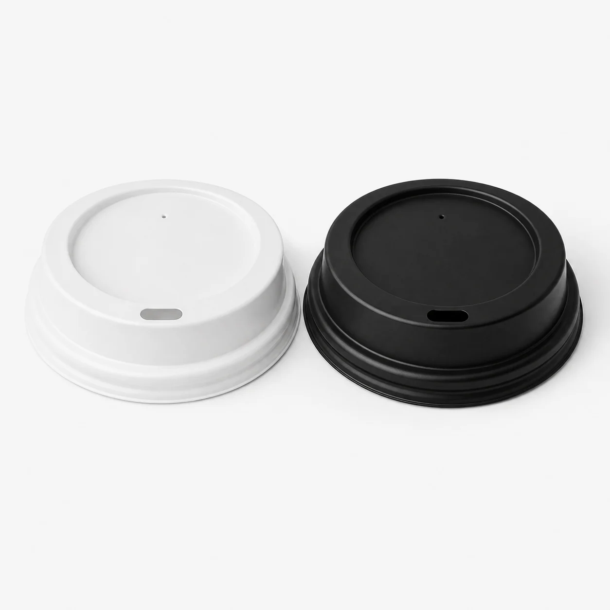
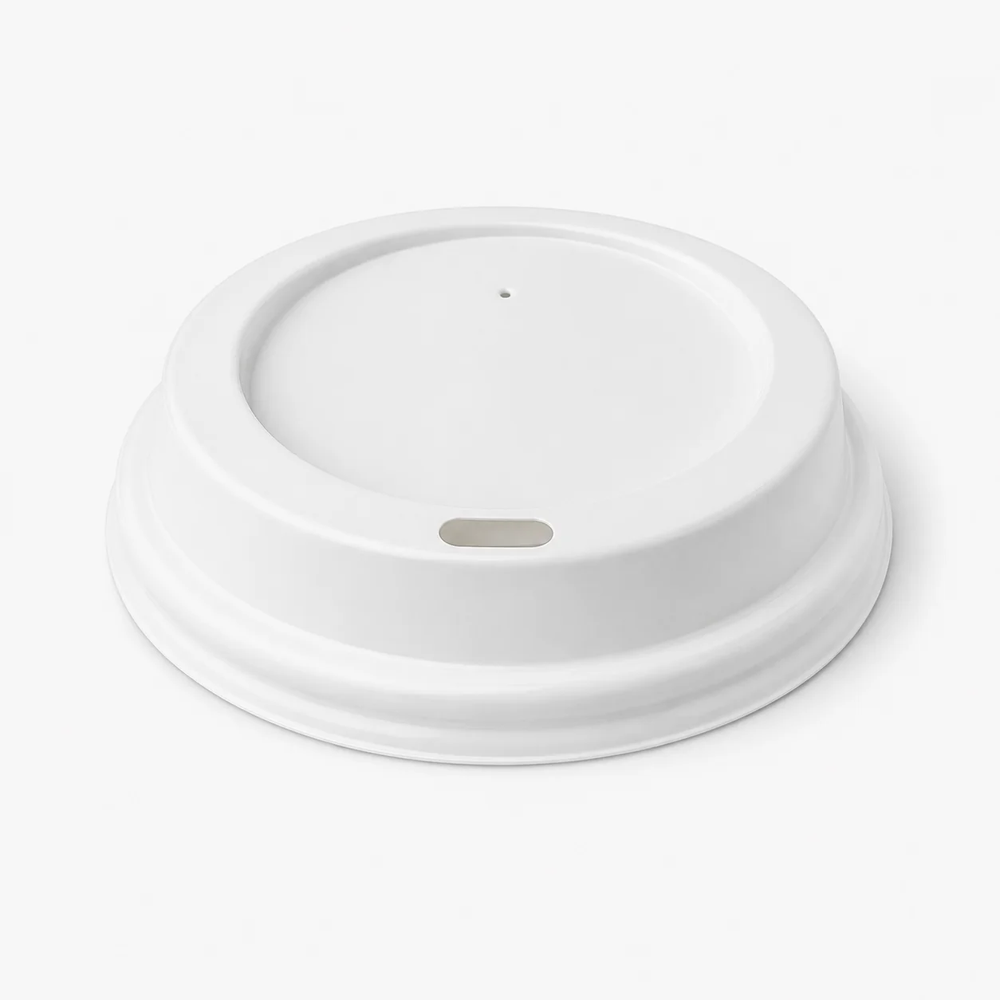
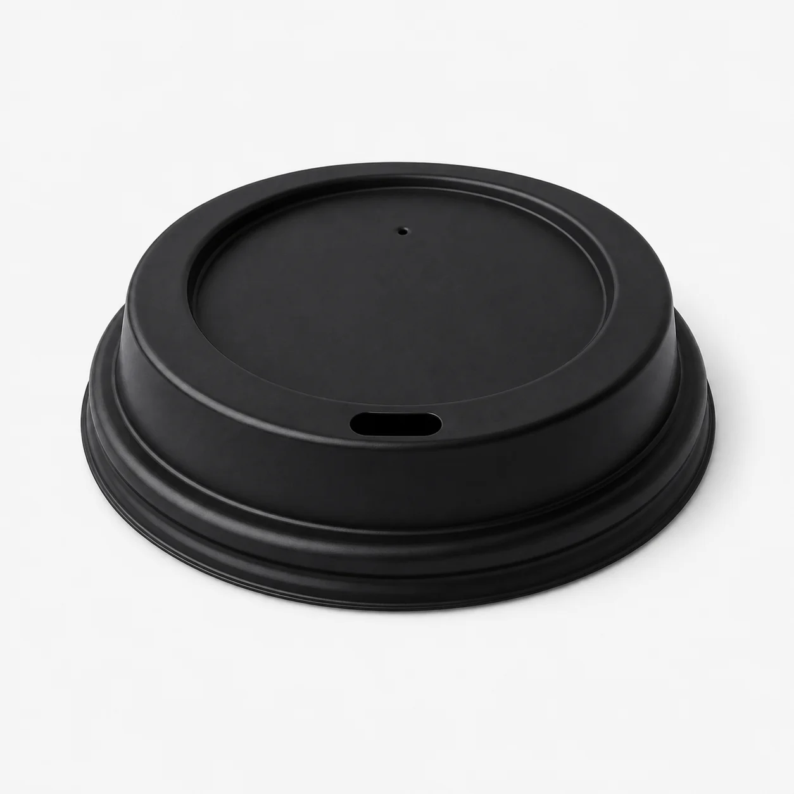

7oz & 12ozKapakë plastikë të qëndrueshëm për gota letre 7oz dhe 12oz. Disponohen në dy ngjyra klasike – të bardhë dhe të zinj – ideal për kafene, restorante dhe çdo biznes horeca.
Zgjidhni ngjyrën që përshtatet më mirë me identitetin e biznesit tuaj. Të dyja variantet ofrojnë të njëjtën cilësi dhe qëndrueshmëri.

Pamje e pastër dhe klasike – plotëson çdo gotë me dizajn të ndritshëm ose të bardhë.

Pamje moderne dhe elegante – ideal për kafene premium dhe branding të errët.
Procesi ynë është i thjeshtë dhe i shpejtë – nga zgjedhja e madhësisë deri te dorëzimi te dera juaj.
Zgjidhni mes madhësisë 7oz dhe 12oz sipas gotave që përdorni.
I bardhë për pamje klasike, i zi për elegancë moderne – sipas brandingut tuaj.
Na kontaktoni me sasinë dhe ne ju dërgojmë ofertën dhe afatin e dorëzimit.
I paketojmë me kujdes dhe i dorëzojmë direkt në biznesin tuaj.
| Madhësia | Ngjyra | Porosia Minimale | Përshtatje |
|---|---|---|---|
| 7oz | I bardhë / I zi | 1,000 copë | Gota letre 7oz ERA |
| 12oz | I bardhë / I zi | 1,000 copë | Gota letre 12oz ERA |
💡 Shënim: Kapakët janë të projektuar të përshtaten saktë me gota letre ERA. Na kontaktoni për të verifikuar përputhshmërinë me gota nga furnitorë të tjerë.